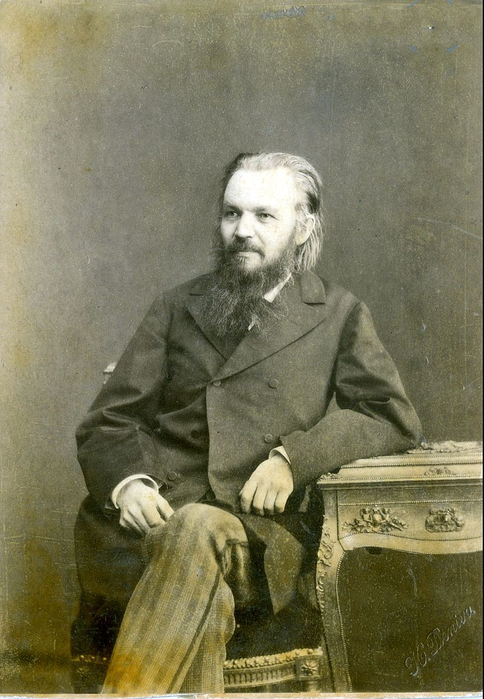
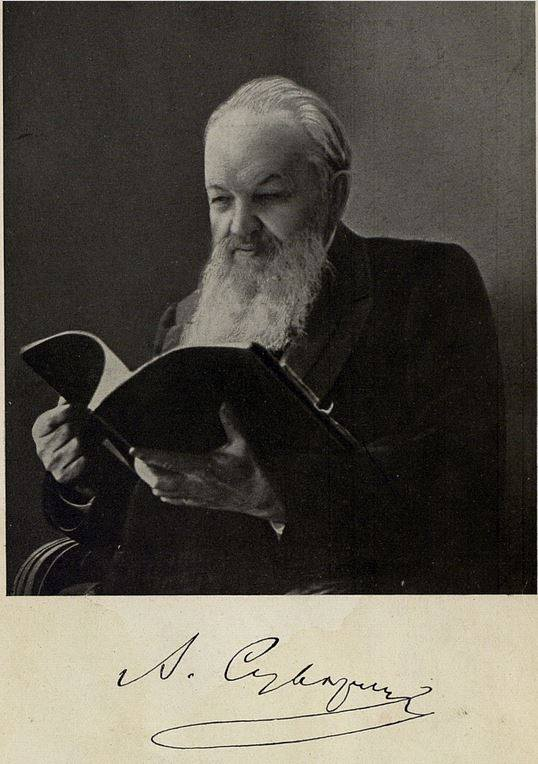
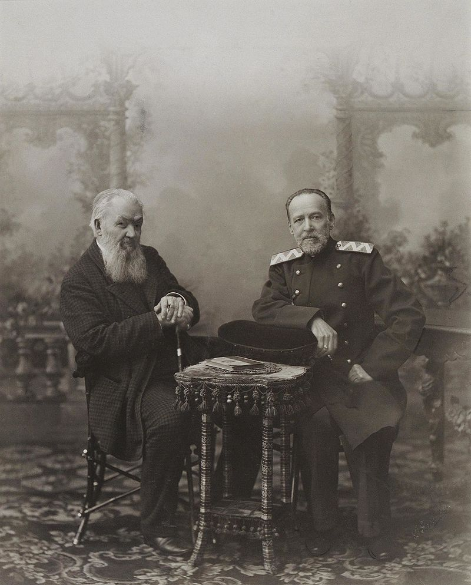
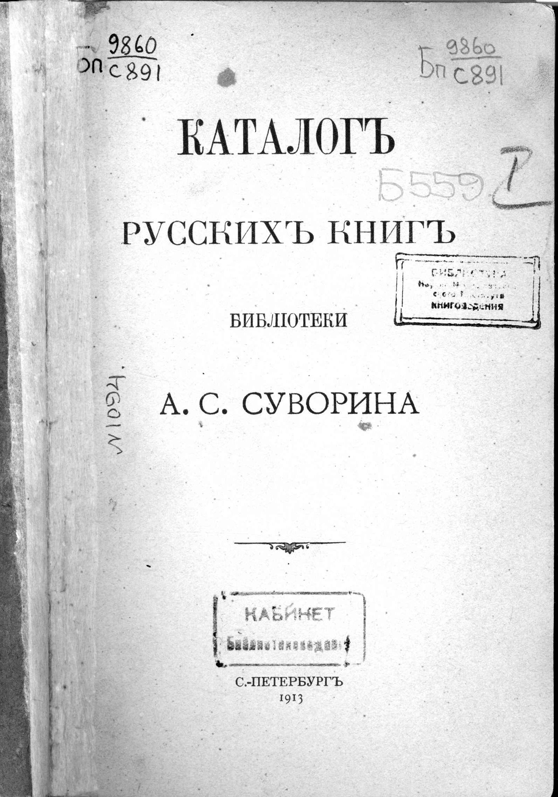
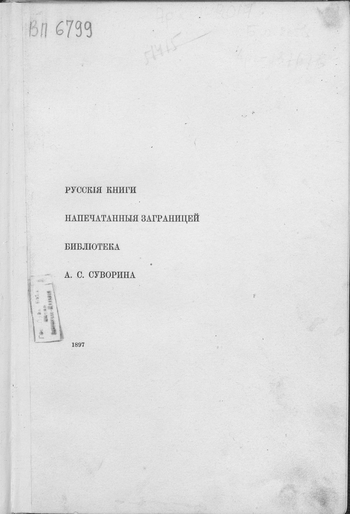

Суворин Алексей Сергеевич
Крупнеиший книгоиздатель, журналист и библиофил
конца XIX начало XX вв.
Крупнеиший книгоиздатель, журналист и библиофил
конца XIX начало XX вв.

Алексей Суворин родился 11 (23) сентября 1834 года в селе Коршеве Бобровского уезда Воронежской губернии (ныне Бобровский район Воронежской области).Суворин учился в воронежском Михайловском кадетском корпусе (окончил в 1851) и в специальных классах Дворянского полка (ныне Константиновское военное училище), откуда выпущен в сапёры. Вскоре он вышел в отставку, выдержал экзамен на звание учителя уездного училища и отдался педагогической деятельности, сначала в Боброве, затем в Воронеже.В 1863 году Суворин переселился в Петербург, где писал обозрение журналов в «Русском инвалиде» (за подписью А. И-н) и стал секретарём и ближайшим сотрудником «Санкт-Петербургских ведомостей»Широкую известность Суворин приобрёл во второй половине 1860-х годов, когда он под псевдонимом Незнакомец стал писать в «Санкт-Петербургские ведомости» воскресный фельетон («Недельные очерки и картинки»).

Крупное значение в газетном деле этому фельетону впервые дал блестящий талант Суворина, соединявший в себе тонкое остроумие с искренностью чувства и уменьем к каждому предмету подойти со стороны его общественного значения. Суворин расширил рамки воскресного фельетона, введя в него обсуждение самых различных сторон современной государственной, общественной и литературной жизни.
Это были лучшие опыты русского политического памфлета, не стеснявшиеся нападать очень резко на отдельных лиц, но вместе с тем только на общественную сторону их деятельности.
В конце 1875 года Суворин стал писать воскресные фельетоны в «Биржевых ведомостях» В. А. Полетики, а в начале 1876 года приобрёл вместе с В. И. Лихачёвым газету «Новое время».
М. Е. Салтыков-Щедрин и Н. А. Некрасов М. Е. Салтыков-Щедрин и Н. А. Некрасов дали свои произведения для первых номеров. Лично Суворин, впрочем, не может быть отождествлён с его газетой. Литературная его манера осталась, в общих чертах, та же, какая была у него в «Санкт-Петербургских ведомостях»; она в основном была свободна от грубого задевания личности, от вульгарных издевательств (в отличие от ведущего критика «Нового времени» В. П. Буренина). Публицистическая деятельность Суворина с приобретением «Нового времени» в общем ослабела. От воскресного фельетона он себя освободил и только изредка вёл рубрику «Маленькие письма». 
В 1901 году Суворин принял участие в создании монархической организации «Русское собрание», первое заседание которой прошло в помещении редакции «Нового времени». Он вошёл в совет Русского собрания, но со временем отошёл от активной деятельности.
Алексей Сергеевич Суворин во время лечения во Франкфурте-на-Майне. Осень 1911.Последние годы Суворин усердно занимался театром, к которому издавна был близок как театральный рецензент, и стал во главе литературно-артистического кружка (Малый театр).
С газетой «Новое время» сотрудничал А. П.Чехов. Суворин увидел талант Чехова и сумел сделать его известным на всю страну. Суворин был близок к Антону Павловичу Чехову, сохранилась их обширная переписка. Как драматург, Суворин известен пользовавшейся большим успехом драмой из жизни актёров «Татьяна Репина» (отд. СПб., 1889, 3 изд. СПб., 1899). «Татьяна Репина» навеяна реальным событием — самоубийством молодой актрисы Евлалии Кадминой в Харькове в 1881 году.С 1872 г. Суворин издавал весьма распространенный «Русский календарь». Почти одновременно с приобретением «Нового времени» Суворин основал книжный магазин и издательскую фирму, занимающую одно из первых мест в русской книжной торговле. С 1895 года издает популярное справочное издание «Вся Россия». В ряду его многочисленных изданий особенного сочувствия заслуживает серия «Дешёвая библиотека» (образцом для неё послужили нем. «Universal-Biblothek» Реклама и франц. «Bibliothèque Nationale»), выпустившая уже несколько сот книжек классических произведений русских и иностранных писателей. Ср. «Библиограф», 1893 г. До 1914 года издательство Суворина выпускало подробный адресный справочник «Весь Петербург». Справочник содержал как информацию по самым разным учреждениям и улицам, так и поимённый список квартиросъёмщиков — с адресами, званиями и профессиями, телефонами. Скончался Суворин 11 (24) августа 1912 года в Царском Селе, на даче вблизи Баболовского дворца.Похоронен на Никольсклом кладбище Адександро-Невской лавры.
Изд. А. Суворина или Изд. Контрагентства А. С. Суворина… или же: Изд. Товарищества Контрагент печати (сокращенно: Изд. Т-ства КП), как поначалу он (Суворин) свое контрагентство называл и с 1906 года по 1909 год издавал открытки именно под такими шапками. Предпринятое же А.С.Сувориным массовое издание видовых открыток по огромному количеству больших и малых городов и городков, сел, слобод, местечек и железнодорожных станций было поистине грандиозным. Несколько десятков тысяч видов общим тиражом во многие сотни тысяч открыток. Поистине неисчерпаемая залежь исторической фотодокументалистики.»
Имея практически монопольное право на торговлю книгами, открытками и прочей печатной продукцией на железнодорожных вокзалах и станциях, А.С.Суворин с 1906 года стал также издавать и своеобразные сувенирные открытки со схемами разных железных дорог России, украшая их микровидами городов, через которые та или иная дорога проходила. В цветном и черно-белом вариантах они охотно раскупались пассажирами в память о поездках по той или иной дороге.
Серии черно-белых открыток издавались и переиздавались А.С. Сувориным почти ежегодно — как отдельными открытками, так и буклетными книжечками по 15 открыток, из которых они могли легко отрываться…»

За 40 лет издательской деятельности А.С.Суворин выпустил около 1500 книг универсальной тематики общим тиражом в 6,5 млн. экземпляров. И на закате своей жизни А.С.Суворин вполне мог поздолить себе написать: Как издатель я оставлю прекрасное имя. Да, прямо так и говорю. Ни одного пятна. Я издал много, я никого не эксплуатировал, никого не жал, напротив, делал все, что может делать хороший хозяин относительно своих сотрудников и рабочих. <…> Газета дает до 600 тысяч в год, а у меня кроме долгов ничего нет, то есть нет денег. Есть огромное дело, которое выросло до миллионного оборота, но я до сих пор не знал никакого развлечения, никаких наслаждений, кроме труда самого каторжного. Расчетлив я никогда не был, на деньги никогда не смотрел как на вещь, стоящую внимания.
Менее известен А. С. Суворин как библиофил, хотя он был обладателем одного из крупнейших русских частных книжных.Первые книжные приобретения А. С. Суворин сделал, вероятно, в начале 50-х годов.Суворин сосредоточил внимание в основном на иностранной беллетристике, критике и истории, рецензии на которые помещал в «Вестнике Европы». Этот раздел своей библиотеки он усердно комплектовал в течение всей жизни, и даже за несколько месяцев до смерти, по словам Либровича, он часто заходил в иностранный отдел магазина Вольфа, внимательно просматривал все новинки по искусству и мемуарную литературу.За 50 с лишним лет Суворин собрал богатейшую библиотеку, насчитывавшую до 40 тысяч томов, посвященных в основном гу-манитарным наукам15. О бережном, истинно библиофильском от¬ношении к своему собранию свидетельствует и большое количество превосходных переплетов работы лучших столичных мастеров, и специально сделанный еще в конце XIX века экслибрис, пред¬ставляющий собой четырехгранный книжный ярлык с типографски отпечатанным текстом: «Из библиотеки Алексея Сергеевича Суворина Шкаф... № ...» .  Подробнее Кроме того до нас дошли его каталоги Русские книги библиотеки А. С. Суворина, судя по каталогу, представляли наиболее значительную (в количественном отношении) часть собрания и составляли около 12000 названий или свы¬ше 20000 томов.  Подробнее Хронологические рамки коллекции — от XVII do начала XX века. Преобладали издания второй половины XIX века, то есть времени наиболее интенсивного комплектования библиоте¬ки. Собрание разбито составителем на 17 разделов.Каталог иностранной части библиотеки А. С. Суворина вклю¬чает около 8500 названий альбомов, книг, брошюр и журналов на нескольких европейских языках. Предпочтение отдано литературе на французском и немецком, которыми свободно владел Суворин. Хронологически собрание охватывает три столетия (от 1600 до 1905 г.),а по содержанию разбивается на 16 разделов. За редким исключением они соответствуют разделам «Каталога русских книг библиотеки А. С. Суворина».